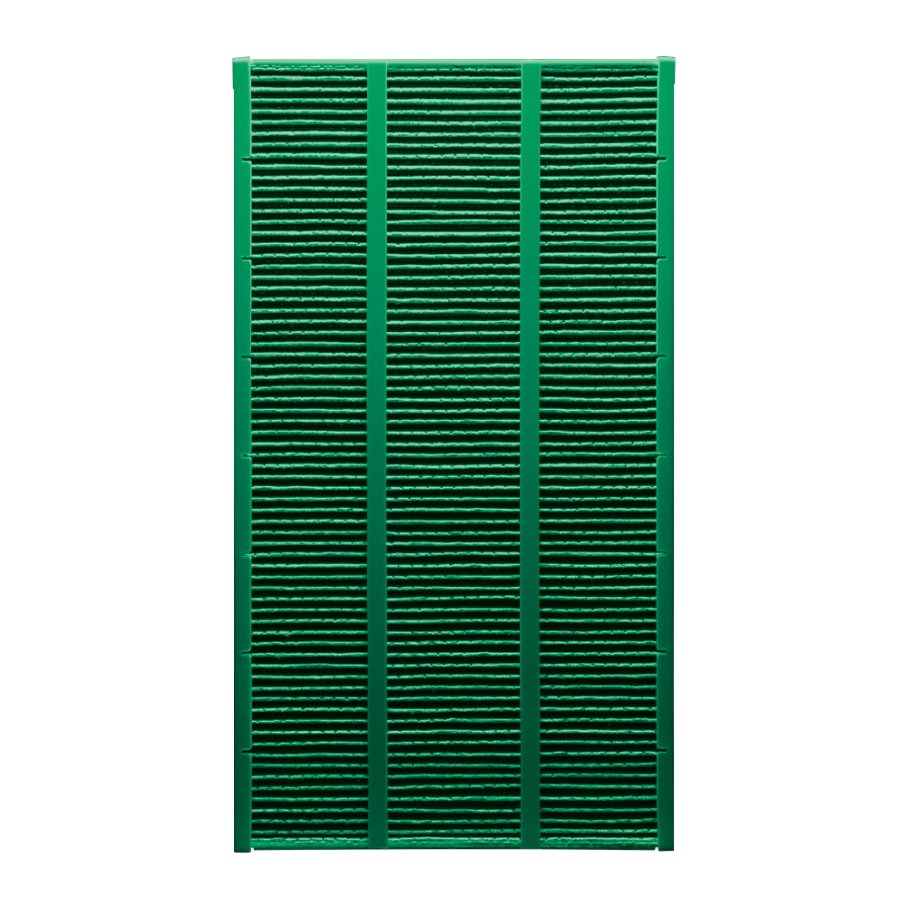
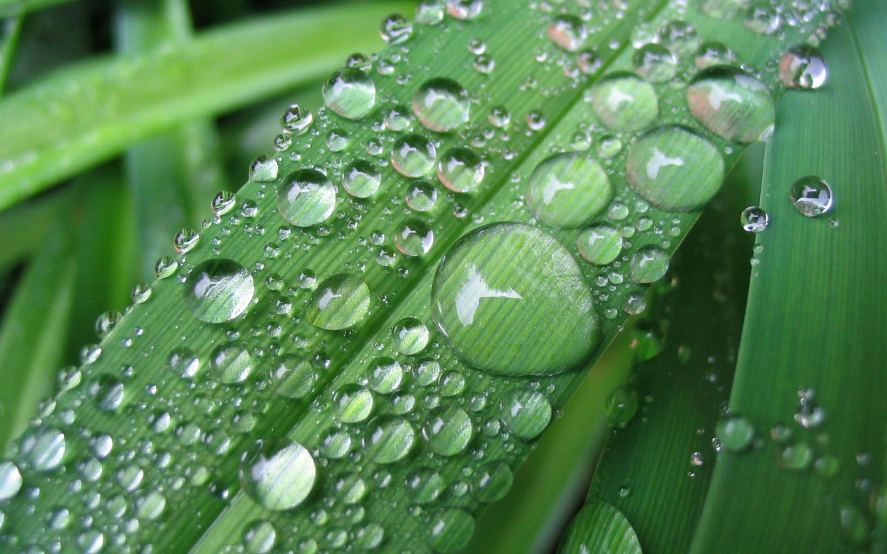

Фильтр увлажнения Water A704
Важное дополнение для создания свежей атмосферы в вашем доме.
Вода, испаряясь естественным образом с поверхности фильтра, находится в мелкодисперсном газообразном состоянии, как в природе - 0,1 нм.
Использование синтетического материала и вискозного волокна с антибактериальной и антиплесневой пропиткой позволило продлить безопасный срок службы фильтра.
Увлажнение воздуха путем естественного испарения воды с медицинской точки зрения является самым оптимальным для детей, взрослых и домашних животных.
При естественном увлажнении на мебели, бытовой технике и паркете не образуется белый налет солей кальция.
Природная защита
Фильтр естественного увлажнения с антибактериальной и антиплесневой пропиткой обеспечивает эффективную работу воздухоочистителя-увлажнителя A704в течение 6 месяцев.